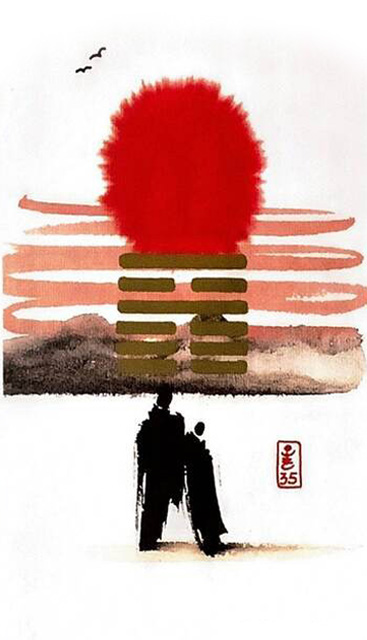

화지진
소길 7
대지에 태양이 솟으니 만물이 성장한다
밝음이 있는 곳에는 늘 조화와 행복이 있다희망찬 아침 두 사람이 함께 떠오르는 태양을 보며따뜻한 기운을 느끼며 사랑을 나누는 상황을 표현한 그림
진보하다.나아가다.전진하다.밝음이 왕성하다.진행하다.좋아짐.승진.감사.공감.인정 받다.업적.성공.달성.꾸준한성과.확실한증가.승승장구
연애운
사랑의 절정.정열적인 사랑.결혼운
사업운
사업확장.소원성취.인정 받음.승진. 좋은 기회로 발탁.유명세.희망차다
속마음
썸호감이 크며 많이 좋아하는 마음
1년 이상열정적인 마음 .사랑하는 마음.결혼하고 싶은 마음
이별 후아직도 그립고 사랑해서 재회하고 싶은 마음
솔로연애운
새로운 이성 생길 확률 크다
건강운
열병.전염병 주의